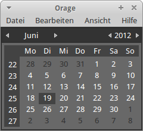
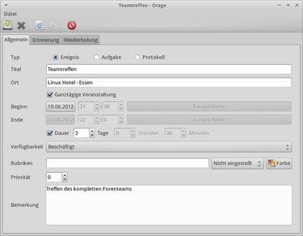

Orage
Dieser Artikel wurde für die folgenden Ubuntu-Versionen getestet:
Ubuntu 16.04 Xenial Xerus
Ubuntu 14.04 Trusty Tahr
Zum Verständnis dieses Artikels sind folgende Seiten hilfreich:
Orage  ist ein einfacher und schneller Terminplaner für die Desktop-Umgebung Xfce. Das frühere Programm „Xfcalendar“ wurde mit der Version 4.4 von Xfce umbenannt und unterstützt neben zahlreichen neuen Erweiterungen der grafischen Oberfläche auch das Kalenderaustauschformat iCal.
ist ein einfacher und schneller Terminplaner für die Desktop-Umgebung Xfce. Das frühere Programm „Xfcalendar“ wurde mit der Version 4.4 von Xfce umbenannt und unterstützt neben zahlreichen neuen Erweiterungen der grafischen Oberfläche auch das Kalenderaustauschformat iCal.
 Funktionen:
Zeitbasierte Verwaltungsmöglichkeiten
Datenspeicherung im iCal-Format
Erinnerungsfunktion bis 2 Tage vor dem Terminstart
Frei wählbarer Alarmsound
Wiederholende und ständige Alarmfunktion
Möglichkeit zur Duplikation von Terminen
Archivierungssystem für Termindaten
Orage kann alternativ auch als Weltzeituhr Verwendung finden (siehe Amateurfunk).
Installation¶
Für die Installation [1] wird das Paket
orage
 mit apturl
mit apturl
Paketliste zum Kopieren:
sudo apt-get install orage
sudo aptitude install orage
benötigt.
Nach erfolgreicher Installation findet man das Programm unter "Anwendungen -> Büro -> Kalender". Sofern der Kalender schon einmal gestartet wurde, erreicht man ihn über das Trayicon . Möchte man dies verhindern, so müssen die Einstellungen verändert werden.
Bedienung¶

Termin hinzufügen¶
Um einen Termin hinzuzufügen, gibt es mehrere Möglichkeiten. Im Programm kann man im Menü "Datei -> Neu" auswählen, oder drückt die Tasten Strg + N . Ist man gerade in einem anderen Programm, kann man durch einen einen Rechtsklick auf das Trayicon den entsprechenden Menüpunkt "Neuer Termin" aufrufen.
Möchte man ein Termin für einen anderes Datum eingeben, kann man zunächst den Kalender öffnen und einen Doppelklick auf das gewünschte Datum ausführen. Es öffnet sich dann die Terminliste für diesen Tag, und man fügt den Termin dann dort hinzu. Im Terminlisten-Fenster stehen auch Knöpfe zum Anlegen, Duplizieren und Entfernen von Terminen zur Verfügung.
Im Dialog zum Anlegen eines neuen Termins gibt man die relevanten Daten auf den Karteikarten ein:
Allgemein¶
Nachdem man einen aussagekräftigen Titel gewählt und den Ort eingetragen hat, kann man wählen, ob der Termin ganztägig, zu einer bestimmten Uhrzeit oder für die Dauer X (Minuten, Stunden oder Tage) stattfindet. Hier die entsprechende Auswahl bei den Optionen treffen. Unter "Verfügbarkeit" kann man zusätzliche Informationen wie "Frei" oder "Beschäftigt" hinterlegen - je nachdem, wie wichtig der Termin ist. Unter Bemerkungen hat man die Möglichkeit Gesprächsnotizen zu hinterlegen.
Erinnerung¶
Hier wählt man die Form aus, in der man an den Termin erinnert weden möchte: Fenster und/oder Alarmsignal. Zuerst definiert man, zu welchem Zeitpunkt an den Termin erinnert werden soll. Hier die Tage, Stunden oder Minuten auswählen. Bleiben alle Werte auf 0, wird keine Meldung für dieses Ereignis ausgegeben. Nachdem man das passende Erinnerungssignal ausgewählt hat, kann man durch Aktivieren der Checkbox das Alarmsignal wiederholen lassen.
Wiederholung¶
Unter diesem Reiter kann man immer wiederkehrende Ereignisse definieren. Falls ein Termin täglich oder in einem regelmäßigen Rhythmus stattfindet, kann man diesen hier angeben.
Sofern alle relevanten Daten eingegeben sind, kann man den Termin nun speichern oder speichern und beenden . Neben den eigenen Informationen werden außerdem Kennzeichen zu jedem Termin hinterlegt. Im Hauptfenster von Orage sind Tage, an denen ein Termin eingetragen wurde, in Fettschrift hinterlegt.
Anzeige¶
| Menü | |
| Element | Beschreibung |
 | Einen neuen Termin hinzufügen. |
 | Den Termin speichern. |
| Den Termin speichern und das Fenster schließen. | |
 | Den Termin duplizieren. |
 | Termin löschen. |
 | Durch die kommenden Tage navigieren. |
 | Zum heutigen Datum wechseln.. |
 | Vorherige Tage ansteuern. |
 | Ansicht aktualisieren. |
 | Einträge löschen. |
Kennzeichen¶
Kennzeichen erlauben es, auf einen Blick die eingestellten Optionen zu einem Termin zu ersehen:
| Kennzeichen | |
| Option | Beschreibung |
| n | kein Alarm |
| A | visueller Alarm |
| S | zusätzliches Audiosignal |
| n | keine Wiederholung |
| D | täglich |
| W | wöchentlich |
| M | monatlich |
| Y | jährlich |
| f | frei |
| B | beschäftigt |
Konfiguration¶
Um einige Einstellungen an Orage vorzunehmen, ruft man den Menüpunkt "Bearbeiten -> Einstellungen" im Kalender auf. Hier kann man festlegen, ob die Kalender-Umrandung angezeigt oder ausgeblendet sein soll, die Anzeigeoptionen des Kalender-Fensters ändern, auswählen, ob der Kalender beim Start von Xfce angezeigt werden soll et cetera. Man erreicht dieses Menü ebenfalls über den Einstellungsmanager.
Tastenkürzel¶
| Tastenkürzel | |
| Taste(n) | Beschreibung |
| Strg + N | Einen neuen Eintrag vornehmen. |
| Strg + H | Die Hilfe starten. |
| Strg + W | Das Fenster schließen. |
| Strg + B | Das Programm beenden. |
Problembehebung¶
Google Calendar in Orage anzeigen¶
Da Orage selbst keine Möglichkeit bietet, Kalender aus dem Netzwerk zu beziehen, muss ein kleiner Umweg eingelegt werden. Mit Hilfe eines Taskplaners wie z.B. GNOME Schedule wird der Kalender im "Nur Lesen"-Modus stündlich heruntergeladen, sofern es Änderungen gab, und in Orage als "Fremddatei" hinzugefügt. Zuerst sollte also ein Taskplaner installiert werden.
Bei GNOME Schedule wird der Menüpunkt "Anwendungen -> System -> Geplante Aufgaben" aufgerufen. Dort klickt man auf "Neue Aufgabe hinzufügen" und wählt "Eine Aufgabe, die in bestimmten Zeitabständen ausgeführt wird". Nun wird nur noch ein beliebiger Name für die Aufgabe vergeben und der folgende Befehl eingetragen, um die Kalenderdatei herunterzuladen. <Link zum Google Kalender.ics> muss dabei durch die ICal-Kalender-Adresse oder Privatadresse aus den Google-Kalender-Einstellungen ersetzt werden:
wget -N -P ~/.local/share/orage <Link zum Google Kalender.ics>
Achtung: Vor das %40 in der iCal-Kalender-Adresse muss ein Backslash (\) gesetzt werden. Zuletzt wird der gewünschte Aktualisierungszeitraum festgelegt und die Aufgabe hinzugefügt. Abschließend ruft man jetzt Orage auf und trägt den Pfad zur Kalenderdatei unter "Datei -> Tauschdaten -> Fremddateien" ein. Nach dem Hinzufügen ist der Kalender im Hauptprogramm verfügbar, nach der nächsten Anmeldung auch im Xfce-Panel-Applet.
 Übersichtsartikel
Übersichtsartikel- Erstellt mit Inyoka
-
 2004 – 2017 ubuntuusers.de • Einige Rechte vorbehalten
2004 – 2017 ubuntuusers.de • Einige Rechte vorbehalten
Lizenz • Kontakt • Datenschutz • Impressum • Serverstatus -
Serverhousing gespendet von